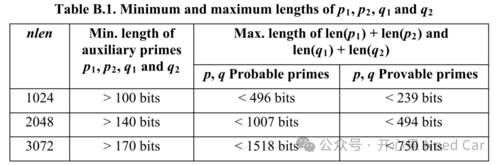
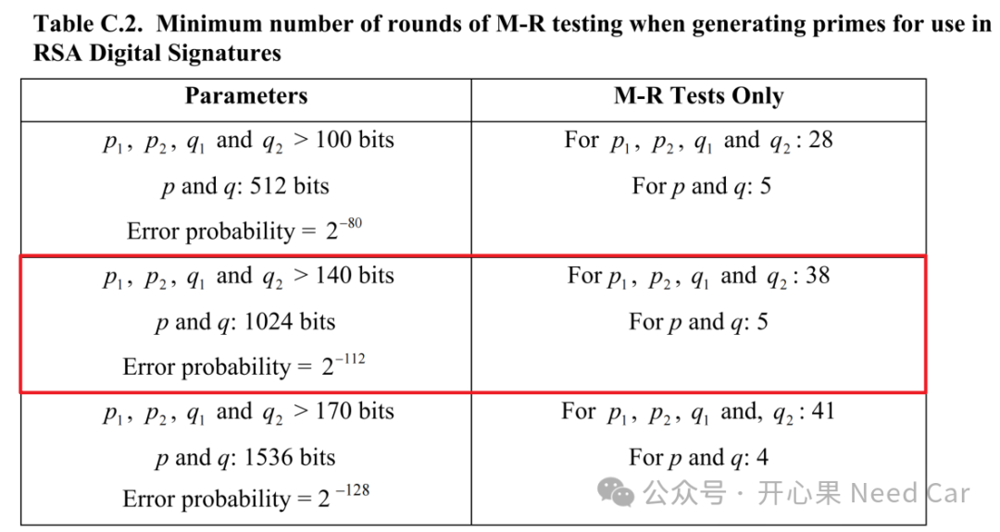

开心果 Need Car · 2025-02-25T06:36:00+08:00 · 微信原文
RSA密钥生成基本原理，过程如下：
第一，选择两个大素数 p 和 q。素数的选择要足够大且具有良好的随机性，以确保RSA算法的安全性。由于 p 和 q 是非常大的素数，使得分解 n=p×q 变得极其困难，这就是RSA算法安全性的基础。但是，生成这两个大素数可不容易，需要经过严格的素性测试。
第二，计算模数 n=p×q，公钥和私钥的n相同，提示：模数n的长度就是密钥的长度（key size）。
第三，计算欧拉函数 φ(n)，欧拉函数 φ(n) 表示小于 n 且与 n 互质的正整数的个数。对于两个素数 p 和 q， φ(n)=(p−1)×(q−1)。
提示：什么是互质？若两个数的最大公约数为1，则它们互质。 什么是素数（prime Number）？素数又称为质数，素数是大于1的正整数，且不能被1和自身以外的其他自然数整除。eg：2、3、5、7、11等。
第四，选择公钥指数 e，选择一个整数 e，满足 1<e<φ(n) 且 e 与 φ(n) 互质（即 gcd(e,φ(n))=1，其中 gcd（Greatest Common Divisor）表示最大公约数）。对于RSA2048，e一般选择0x10001。
提示：什么是最大公约数？两个或者多个数共有约数中的最大的一个。eg：
12的约数：1、2、3、4、6、12
18的约束：1、2、3、6、9、18
12和18的最大约数是6。
第五，计算私钥指数 d，私钥指数 d 是 e 关于 φ(n) 的模逆元，即需要找到一个整数 d 使得 d×e≡1(modφ(n))。这意味着 d×e=k×φ(n)+1，其中 k 是某个整数。可以使用扩展欧几里得算法来计算 d。
第六，形成密钥对，公钥：(e, n)，私钥：私钥(d, n)。
当然，除了上述通用的IFC密钥对生成原理，也可以参考FIPS186-4 B.3了解更详细的IFC密钥生成过程。
提示：什么是模逆运算（Modular Inverse)?若存在整数 a 和模数 n，且 a 与 n 互质（即它们的最大公约数为1），则存在一个整数 b，使得：a*b ≡ 1 mod n，此时，b 称为 a 在模 n 下的模逆元，记作 a ^ −1 mod n。举例：3在模11下的逆元：3*4 = 12 ≡ 1 mod 11，记作 3^-1 mod 11 = 4。
2、问题拓展思考
Q1：公钥指数e需要满足什么约束条件？
A1：参考规范（1），公钥指数（public key exponent）需要满足2^16 < e < 2^256，由于e需要选择一个较小的固定值，所以，在实际的RSA2048应用中，选择e = 65537（0x10001）即：2^16+1。
Q2：密钥计算过程中的素数p和q的长度应该多长呢？
A2：密钥计算过程中，获取模数n的关键步骤是获取有效的两个大素数p和q，即：n = p * q。那么，p和q应该多大呢？或者说其长度应该是多少呢？参考规范（1），理解p和q前，先简单了解一下辅助素数（auxiliary primes）p1 =(p-1)、p2=(p+1)、q1=(q-1)、q2=(q+1)。p1、p2、q1、q2的长度范围如下所示：

如果要生成p和q，首先需要确认要生成的p和q的位数，通常p和q位数相同。eg：生成2048 bit长度密钥，则len(p) = len(q) = 1024 bit；生成4096 bit长度密钥，则len(p) = len(q) = 2048 bit。生成的p和q并不是简单的随机生成即可，需要对p和q进行素性测试，并且p≠q。
Q3：p和q有哪些素性测试要求？
A3：按照FIPS186-4 B.3.1要求。生成目标长度的p和q（eg：长度为1024 bit）需要满足以下条件：
1.b 2^16 < e < 2^256；
2.a (p - 1)和(q - 1)必须与公钥指数e互质；
2.b (2^0.5)(2^(nlen/2-1)) ≤ p ≤ (2^(nlen/2) - 1)
2.c (2^0.5)(2^(nlen/2-1)) ≤ q ≤ (2^(nlen/2) - 1)
2.d |p - q| > 2^(nlen/2 - 100)，通过强制素数间距，确保攻击者无法利用平方差逼近快速分解模数。
3.a 2^(nlen/2) < d < LCM(p - 1, q - 1)，其中，LCM（Least Common Multiple，最小公倍数）
3.b d = e^-1 mod (LCM(p - 1, q - 1))
生成1024 bit的随机数，如果随机数为偶数，则加1使其变为奇数（FIPS.186-4 B.3.4约束）。关于素数p和q如何生成，更多方法和细节可以参考FIPS.186-4的B.3.3~B.3.6章节。
Q4：p和q有哪些素性测试要求？
A4：既然需要对p和q进行素性测试，需要测试多少轮呢？为了确保生成的p和q的可靠性，需要经过严格测试。FIPS.186-4的C.3章节，p和q需要经过米勒-拉宾概率质数测试（Miller-Rabin probabilistic primality tests）的要求及错误率，如下所示：

信息安全，ECDSA（SECP256R1/K1曲线）和它的性能
基于SWAP（AB分区）的SOTA实践：内存与分区关系&锁芯片后的特征
别人的*.elf文件，该如何使用Lauterbach进行白盒调试？